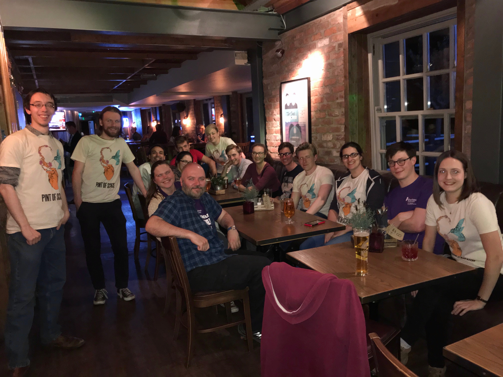

Pint of Science 2018
Fri, May 18, 2018
Pint of Science 2018 came to Durham on the 14th of May, and was a three-day long festival of science. For the Durham “chapter”, I ran publicity – that involved making posters and flyers, contacting media outlets, and doing “social media”. It also involved managing a small team of people to help me out with all of that.
Pint of Science ended up being a fantastic event. For most of it, I presented our Galaxy Makers “Tour the Universe” virtual reality demo at our Atoms to Galaxies event. We heard about everything from launching a space telescope to fusion energy, and the Boat Club was packed to the rafters!
It was really nice to see people engage with science in a slightly different context, as well as get a chance to engage some older people (read: not children) to come to an engagement event. A lot of our efforts are focused on engaging children, with the hope that they will pursue a STEM carrer, but it’s not them who pay for the science we do – it’s their parents and grandparents. Bringing the science that they pay for our to them is always a really rewarding experience.
Hopefully Pint of Science will be back next year in Durham, keep your eyes on the website.